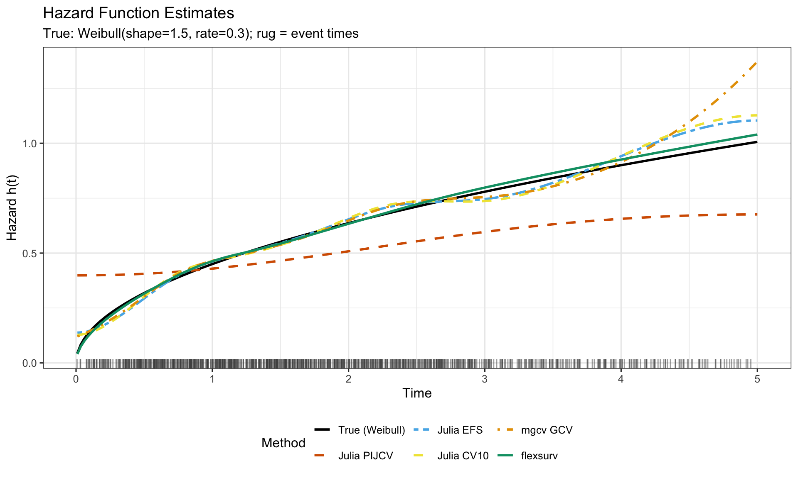
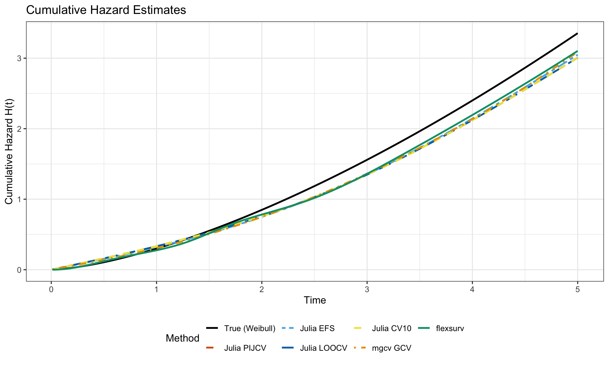
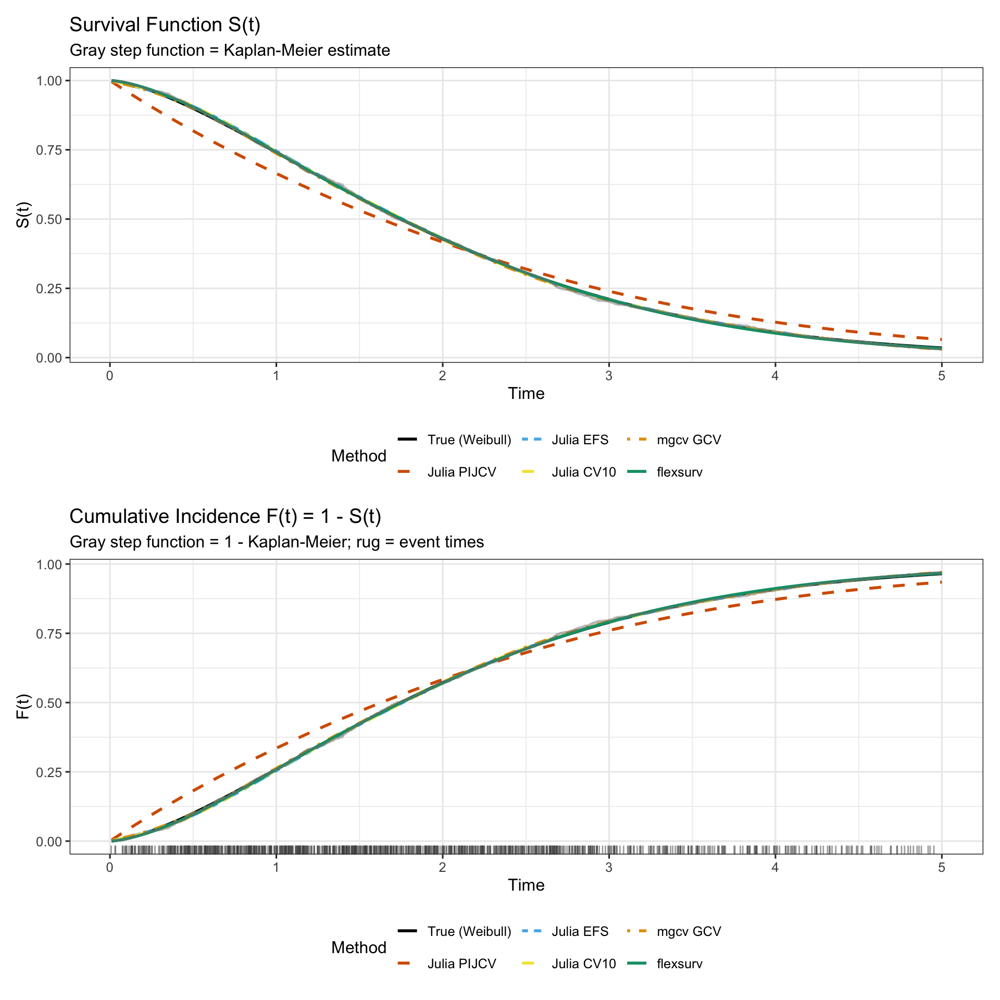
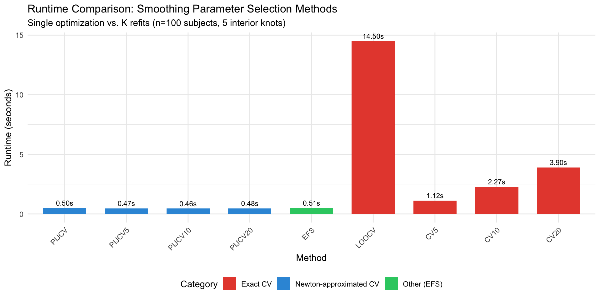
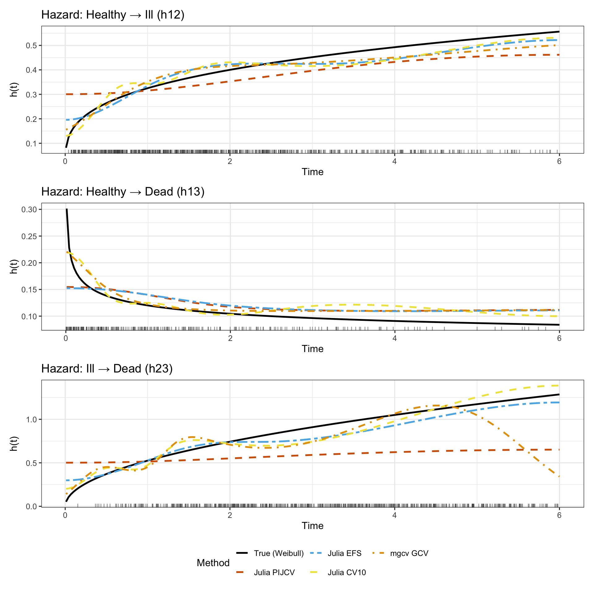
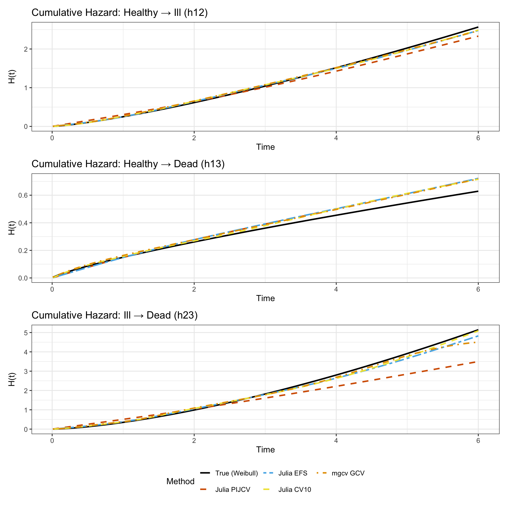

Show code
library(tidyverse)
library(mgcv)
library(pammtools)
library(flexsurv)
library(survival)
library(patchwork)
library(knitr)
library(kableExtra)
# Set theme
theme_set(theme_bw(base_size = 12))Comparing MultistateModels.jl Splines vs mgcv and flexsurv
January 12, 2026
cd ../..
julia --project=. -e '
using MultistateModels
using Random
using DataFrames
using CSV
using Printf
# Configuration
n = 1000
true_shape = 1.5
true_rate = 0.3
max_time = 5.0
seed = 12345
nknots = 5 # Number of interior knots
Random.seed!(seed)
# Simulate Weibull survival data
E = -log.(rand(n))
event_times = (E ./ true_rate) .^ (1 / true_shape)
obs_times = min.(event_times, max_time)
status = Int.(event_times .<= max_time)
println("=== Simple Survival Data ===")
println("n = $n")
println("Events: $(sum(status))")
println("Censored: $(n - sum(status))")
println("Time range: [$(round(minimum(obs_times), digits=3)), $(round(maximum(obs_times), digits=3))]")
# Create multistate model data
surv_data = DataFrame(
id = 1:n,
tstart = zeros(n),
tstop = obs_times,
statefrom = ones(Int, n),
stateto = ifelse.(status .== 1, 2, 1),
obstype = ones(Int, n)
)
# Save to CSV for R to read
CSV.write("MultistateModelsTests/reports/_surv_data.csv", DataFrame(time = obs_times, status = status))
# Define model with spline hazard (initial knots will be replaced by calibration)
h12 = Hazard(@formula(0 ~ 1), "sp", 1, 2;
degree = 3,
knots = Float64[], # Will be set by calibrate_splines!
boundaryknots = [0.0, max_time],
natural_spline = true)
model = multistatemodel(h12; data=surv_data)
# Calibrate knots based on data - places knots at quantiles of event times
println("\nCalibrating spline knots...")
knot_result = calibrate_splines!(model; nknots=nknots, verbose=true)
# Extract the calibrated knots
interior_knots = knot_result.h12.interior_knots
boundary_knots = knot_result.h12.boundary_knots
all_knots = model.hazards[1].knots
println("\n=== Knot Configuration ===")
println("Boundary knots: $(boundary_knots)")
println("Interior knots: $(round.(interior_knots, digits=3))")
println("Number of interior knots: $(length(interior_knots))")
println("Total knots: $(length(all_knots))")
println("Number of basis functions: $(length(model.hazards[1].parnames) - length(model.hazards[1].covar_names))")
# Save knots for R to use
CSV.write("MultistateModelsTests/reports/_knots.csv", DataFrame(
interior_knots = interior_knots,
boundary_lower = fill(boundary_knots[1], length(interior_knots)),
boundary_upper = fill(boundary_knots[2], length(interior_knots))
))
println("\nData generation complete. Knots and data saved for R.")
'cd ../..
julia --project=. -e '
using MultistateModels
using Random
using DataFrames
using CSV
using Printf
# Configuration (must match data generation)
n = 1000
true_shape = 1.5
true_rate = 0.3
max_time = 5.0
seed = 12345
nknots = 5
Random.seed!(seed)
# Regenerate the same data
E = -log.(rand(n))
event_times = (E ./ true_rate) .^ (1 / true_shape)
obs_times = min.(event_times, max_time)
status = Int.(event_times .<= max_time)
surv_data = DataFrame(
id = 1:n,
tstart = zeros(n),
tstop = obs_times,
statefrom = ones(Int, n),
stateto = ifelse.(status .== 1, 2, 1),
obstype = ones(Int, n)
)
# Define and calibrate model
h12 = Hazard(@formula(0 ~ 1), "sp", 1, 2;
degree = 3,
knots = Float64[],
boundaryknots = [0.0, max_time],
natural_spline = true)
model = multistatemodel(h12; data=surv_data)
calibrate_splines!(model; nknots=nknots, verbose=false)
# Fit with each smoothing method and measure runtime
timings = Dict{String, Float64}()
println("=== Fitting Smoothing Methods with Timing ===")
# PIJCV (LOO) - Newton-approximated
println("\nFitting with PIJCV (LOO) method...")
select_smoothing_parameters(model, SplinePenalty(); method = :pijcv, verbose = false) # warmup
t_pijcv = @elapsed result_pijcv = select_smoothing_parameters(model, SplinePenalty();
method = :pijcv, verbose = false)
timings["PIJCV"] = t_pijcv
println(" PIJCV λ = $(round(result_pijcv.lambda[1], digits=2)), EDF = $(round(result_pijcv.edf.total, digits=2)), time = $(round(t_pijcv, digits=3))s")
# PIJCV10 (10-fold) - Newton-approximated
println("\nFitting with PIJCV10 (10-fold) method...")
select_smoothing_parameters(model, SplinePenalty(); method = :pijcv10, verbose = false) # warmup
t_pijcv10 = @elapsed result_pijcv10 = select_smoothing_parameters(model, SplinePenalty();
method = :pijcv10, verbose = false)
timings["PIJCV10"] = t_pijcv10
println(" PIJCV10 λ = $(round(result_pijcv10.lambda[1], digits=2)), EDF = $(round(result_pijcv10.edf.total, digits=2)), time = $(round(t_pijcv10, digits=3))s")
# EFS
println("\nFitting with EFS method...")
select_smoothing_parameters(model, SplinePenalty(); method = :efs, verbose = false) # warmup
t_efs = @elapsed result_efs = select_smoothing_parameters(model, SplinePenalty();
method = :efs, verbose = false)
timings["EFS"] = t_efs
println(" EFS λ = $(round(result_efs.lambda[1], digits=2)), EDF = $(round(result_efs.edf.total, digits=2)), time = $(round(t_efs, digits=3))s")
# CV10 (exact 10-fold)
println("\nFitting with 10-fold CV (exact) method...")
select_smoothing_parameters(model, SplinePenalty(); method = :cv10, verbose = false) # warmup
t_cv10 = @elapsed result_cv10 = select_smoothing_parameters(model, SplinePenalty();
method = :cv10, verbose = false)
timings["CV10"] = t_cv10
println(" CV10 λ = $(round(result_cv10.lambda[1], digits=2)), EDF = $(round(result_cv10.edf.total, digits=2)), time = $(round(t_cv10, digits=3))s")
# Evaluation grid
eval_times = collect(range(0.01, max_time, length=200))
# Function to evaluate hazard at a grid of times
function evaluate_curves(model, beta, eval_times)
haz = model.hazards[1]
hazard_vals = [haz.hazard_fn(t, beta, ()) for t in eval_times]
cumhaz_vals = [haz.cumhaz_fn(0.0, t, beta, ()) for t in eval_times]
survival_vals = exp.(-cumhaz_vals)
return (hazard = hazard_vals, cumhaz = cumhaz_vals, survival = survival_vals)
end
# Compute curves for each method
curves_pijcv = evaluate_curves(model, result_pijcv.beta, eval_times)
curves_pijcv10 = evaluate_curves(model, result_pijcv10.beta, eval_times)
curves_efs = evaluate_curves(model, result_efs.beta, eval_times)
curves_cv10 = evaluate_curves(model, result_cv10.beta, eval_times)
# Compute unpenalized log-likelihoods using ExactData
samplepaths = MultistateModels.extract_paths(model)
exact_data = MultistateModels.ExactData(model, samplepaths)
loglik_pijcv = MultistateModels.loglik_exact(result_pijcv.beta, exact_data; neg=false)
loglik_pijcv10 = MultistateModels.loglik_exact(result_pijcv10.beta, exact_data; neg=false)
loglik_efs = MultistateModels.loglik_exact(result_efs.beta, exact_data; neg=false)
loglik_cv10 = MultistateModels.loglik_exact(result_cv10.beta, exact_data; neg=false)
# Save Julia results for R plotting
julia_results = DataFrame(
time = repeat(eval_times, 4),
hazard = vcat(curves_pijcv.hazard, curves_pijcv10.hazard,
curves_efs.hazard, curves_cv10.hazard),
cumhaz = vcat(curves_pijcv.cumhaz, curves_pijcv10.cumhaz,
curves_efs.cumhaz, curves_cv10.cumhaz),
survival = vcat(curves_pijcv.survival, curves_pijcv10.survival,
curves_efs.survival, curves_cv10.survival),
method = repeat(["Julia PIJCV", "Julia PIJCV10",
"Julia EFS", "Julia CV10"], inner=length(eval_times))
)
CSV.write("MultistateModelsTests/reports/_julia_curves.csv", julia_results)
# Save summary stats with unpenalized log-likelihoods and timing
julia_summary = DataFrame(
method = ["PIJCV", "PIJCV10", "EFS", "CV10"],
lambda = [result_pijcv.lambda[1], result_pijcv10.lambda[1],
result_efs.lambda[1], result_cv10.lambda[1]],
edf = [result_pijcv.edf.total, result_pijcv10.edf.total,
result_efs.edf.total, result_cv10.edf.total],
loglik = [loglik_pijcv, loglik_pijcv10,
loglik_efs, loglik_cv10],
runtime_sec = [timings["PIJCV"], timings["PIJCV10"],
timings["EFS"], timings["CV10"]]
)
CSV.write("MultistateModelsTests/reports/_julia_summary.csv", julia_summary)
println("\n=== Runtime Summary ===")
println("Newton-approximated CV methods:")
println(" PIJCV (LOO): $(round(timings["PIJCV"], digits=3))s")
println(" PIJCV10: $(round(timings["PIJCV10"], digits=3))s")
println("Other analytical methods:")
println(" EFS: $(round(timings["EFS"], digits=3))s")
println("Exact CV methods:")
println(" CV10: $(round(timings["CV10"], digits=3))s")
println("\nJulia curves computed and saved.")
'This report presents a comprehensive benchmark comparing spline-based survival models across different software packages and smoothing parameter selection methods.
Packages:
Smoothing Parameter Selection Methods:
| Package | Method | Description | Reference |
|---|---|---|---|
| MultistateModels.jl | PIJCV | Newton-approx LOO CV | Wood (2024) |
| MultistateModels.jl | PIJCV10 | Newton-approx 10-fold CV | Extended from Wood (2024) |
| MultistateModels.jl | EFS | Extended Fellner-Schall | Wood & Fasiolo (2017) |
| MultistateModels.jl | CV10 | Exact 10-Fold CV | (refits 10 times) |
| mgcv | GCV.Cp | Generalized CV via Poisson GAM | Wood (2017) |
| mgcv | REML | Restricted ML | Wood (2011) |
We start with the simplest case: a two-state survival model with a single transition from alive (state 1) to dead (state 2).
Data are simulated from a Weibull hazard with:
\[h(t) = \kappa \cdot \lambda \cdot t^{\kappa - 1} = 1.5 \times 0.3 \times t^{0.5} = 0.45 \sqrt{t}\]
\[H(t) = \lambda \cdot t^{\kappa} = 0.3 \cdot t^{1.5}\]
\[S(t) = \exp(-H(t)) = \exp(-0.3 \cdot t^{1.5})\]
# Load simulated data
surv_data <- read.csv("_surv_data.csv")
n <- nrow(surv_data)
true_shape <- 1.5
true_rate <- 0.3
max_time <- 5.0
# Load Julia curves
julia_curves <- read.csv("_julia_curves.csv")
julia_summary <- read.csv("_julia_summary.csv")
# Load knots calibrated by Julia (from event time quantiles)
knots_df <- read.csv("_knots.csv")
interior_knots <- knots_df$interior_knots
boundary_lower <- knots_df$boundary_lower[1]
boundary_upper <- knots_df$boundary_upper[1]
cat("=== Julia MultistateModels.jl Results ===\n")
print(julia_summary)
cat("\n=== Knot Configuration (shared across all methods) ===\n")
cat("Boundary knots: [", boundary_lower, ",", boundary_upper, "]\n")
cat("Interior knots:", round(interior_knots, 3), "\n")
cat("Number of interior knots:", length(interior_knots), "\n")# True hazard function (Weibull with rate parameterization)
true_hazard <- function(t, shape = true_shape, rate = true_rate) {
shape * rate * t^(shape - 1)
}
# True cumulative hazard
true_cumhaz <- function(t, shape = true_shape, rate = true_rate) {
rate * t^shape
}
# True survival function
true_surv <- function(t, shape = true_shape, rate = true_rate) {
exp(-true_cumhaz(t, shape, rate))
}
# True CDF (cumulative incidence for single transition)
true_cdf <- function(t, shape = true_shape, rate = true_rate) {
1 - true_surv(t, shape, rate)
}We fit a piecewise-exponential additive model (PAM) using mgcv::gam with Poisson likelihood. This transforms the survival problem into a Poisson regression. mgcv uses the exact same knots as Julia via manual knot specification for P-splines.
# Create Surv object
surv_obj <- Surv(surv_data$time, surv_data$status)
# Add id column if not present
surv_data_ped <- surv_data %>% mutate(id = row_number())
# Use pammtools to create piecewise-exponential data (PED)
# This handles the data transformation properly
ped <- as_ped(
formula = Surv(time, status) ~ 1,
data = surv_data_ped,
id = "id"
)
cat("PED data structure (via pammtools):\n")
cat(" Total pseudo-observations:", nrow(ped), "\n")
cat(" Events in PED:", sum(ped$ped_status), "\n")
# For mgcv P-splines with manual knots:
# - k is the basis dimension
# - m is the spline order (m=2 for cubic, with 2nd order difference penalty)
# - Need k + m + 2 knots total
# - The middle k - m knots must span the data range
# - P-splines require EVENLY SPACED knots for proper penalty behavior
# Julia uses 5 interior knots + 2 boundary = 7 middle knots
# So k - m = 7, and with m = 2, we have k = 9
k_mgcv <- length(interior_knots) + 4 # 5 + 4 = 9
m_order <- 2
# Build the full knot sequence for P-splines
# Middle knots: [boundary_lower, interior_knots, boundary_upper]
middle_knots <- c(boundary_lower, interior_knots, boundary_upper)
# Need (k + m + 2) - (k - m) = 2m + 2 = 6 padding knots (3 on each side)
# P-splines require evenly spaced knots - use average spacing for padding
# Note: Padding knots extend below 0 but this is just for basis construction;
# the hazard is never evaluated at negative times
delta <- mean(diff(middle_knots))
padding_lower <- boundary_lower - (3:1) * delta
padding_upper <- boundary_upper + (1:3) * delta
# Full knot sequence
mgcv_knots <- c(padding_lower, middle_knots, padding_upper)
cat("\n=== Knot Configuration ===\n")
cat("Julia interior knots:", round(interior_knots, 3), "\n")
cat("Middle knots (k-m =", length(middle_knots), "):", round(middle_knots, 3), "\n")
cat("Full P-spline knots (k+m+2 =", length(mgcv_knots), "):", round(mgcv_knots, 3), "\n")
cat("Average knot spacing (delta):", round(delta, 3), "\n")
cat("mgcv k =", k_mgcv, ", m =", m_order, "\n")
# Fit PAM with GCV using P-splines and manual knots
fit_gcv <- pamm(
ped_status ~ s(tend, bs = "ps", k = k_mgcv, m = c(m_order, m_order)),
data = ped,
method = "GCV.Cp",
knots = list(tend = mgcv_knots)
)
# Fit PAM with REML
fit_reml <- pamm(
ped_status ~ s(tend, bs = "ps", k = k_mgcv, m = c(m_order, m_order)),
data = ped,
method = "REML",
knots = list(tend = mgcv_knots)
)
cat("\n=== mgcv/pammtools Results (P-splines with Julia knots) ===\n")
cat("k =", k_mgcv, ", m =", m_order, "\n")
cat("Manual knots used:", round(mgcv_knots, 3), "\n")
cat("\nGCV.Cp:\n")
cat(" sp =", round(fit_gcv$sp, 6), "\n")
cat(" EDF =", round(sum(fit_gcv$edf), 4), "\n")
cat("\nREML:\n")
cat(" sp =", round(fit_reml$sp, 6), "\n")
cat(" EDF =", round(sum(fit_reml$edf), 4), "\n")# flexsurv uses knots on log(time) scale, so we need to transform
# But we can specify explicit knots via the knots argument
# flexsurv's "knots" argument takes the interior knots on the log scale
# Transform interior knots to log scale for flexsurv
# Note: flexsurv interprets knots as on log(time) scale
log_interior_knots <- log(interior_knots)
cat("Using same interior knots as Julia (transformed to log scale for flexsurv):\n")
cat(" Original knots:", round(interior_knots, 3), "\n")
cat(" Log-scale knots:", round(log_interior_knots, 3), "\n")
# Fit flexsurv spline model with the same knots
fit_flex <- flexsurvspline(
Surv(time, status) ~ 1,
data = surv_data,
knots = log_interior_knots, # Interior knots on log scale
scale = "hazard"
)
# Also fit true Weibull for reference
fit_weibull <- flexsurvreg(
Surv(time, status) ~ 1,
data = surv_data,
dist = "weibullPH"
)
cat("\n=== flexsurv Results ===\n")
cat("\nSpline model (", length(interior_knots), " interior knots):\n", sep="")
cat(" AIC =", round(AIC(fit_flex), 2), "\n")
cat("\nWeibull fit (for reference):\n")
cat(" Estimated shape:", round(exp(fit_weibull$res["shape", "est"]), 3), "\n")
cat(" Estimated scale:", round(exp(fit_weibull$res["scale", "est"]), 3), "\n")
cat(" True shape:", true_shape, "\n")
cat(" True rate:", true_rate, "\n")The effective degrees of freedom (EDF) is the proper metric for comparing smoothing across different software packages. EDF measures how many parameters the smooth effectively uses, independent of λ scaling conventions.
# Collect EDF results - this is the key comparison metric
edf_summary <- rbind(
julia_summary %>%
mutate(Package = "MultistateModels.jl") %>%
select(Package, Method = method, EDF = edf, Lambda_or_sp = lambda),
data.frame(
Package = c("mgcv", "mgcv"),
Method = c("GCV.Cp", "REML"),
EDF = c(sum(fit_gcv$edf), sum(fit_reml$edf)),
Lambda_or_sp = c(fit_gcv$sp, fit_reml$sp)
)
)
kable(edf_summary, digits = 4,
caption = "Effective Degrees of Freedom by Method (Key Comparison)",
col.names = c("Package", "Method", "EDF", "λ or sp")) %>%
kable_styling(bootstrap_options = c("striped", "hover")) %>%
column_spec(3, bold = TRUE, background = "#f0f9e8")| Package | Method | EDF | λ or sp |
|---|---|---|---|
| MultistateModels.jl | PIJCV | 1.4303 | 2980.9580 |
| MultistateModels.jl | PIJCV10 | 1.4303 | 2980.9580 |
| MultistateModels.jl | EFS | 5.6157 | 0.9252 |
| MultistateModels.jl | CV10 | 6.0362 | 0.4724 |
| mgcv | GCV.Cp | 6.0922 | 20.0537 |
| mgcv | REML | 5.3922 | 53.0811 |
For model comparison, we compute AIC and BIC based on the penalized log-likelihood and effective degrees of freedom:
n_obs <- nrow(surv_data)
# Julia model selection criteria
julia_aic_bic <- julia_summary %>%
mutate(
Package = "MultistateModels.jl",
AIC = -2 * loglik + 2 * edf,
BIC = -2 * loglik + log(n_obs) * edf
) %>%
select(Package, Method = method, EDF = edf, LogLik = loglik, AIC, BIC)
# For mgcv: The Poisson pseudo-likelihood differs from survival likelihood by
# an offset correction. The relationship is:
# ℓ_Poisson = ℓ_Survival + Σ_i δ_i * offset_i
# where offset_i = log(interval_width) for the event interval.
# Therefore: ℓ_Survival = ℓ_Poisson - Σ_i δ_i * offset_i
compute_surv_loglik_mgcv <- function(fit_gam, ped) {
# Get Poisson log-likelihood
mu_hat <- fitted(fit_gam)
y <- ped$ped_status
poisson_ll <- sum(y * log(mu_hat) - mu_hat)
# Correction: subtract sum of offsets for event pseudo-observations
event_offsets <- ped$offset[ped$ped_status == 1]
offset_correction <- sum(event_offsets)
# Survival log-likelihood
surv_ll <- poisson_ll - offset_correction
return(surv_ll)
}
# Compute survival log-likelihoods for mgcv models
loglik_mgcv_gcv <- compute_surv_loglik_mgcv(fit_gcv, ped)
loglik_mgcv_reml <- compute_surv_loglik_mgcv(fit_reml, ped)
# mgcv model selection using survival log-likelihood
mgcv_aic_bic <- data.frame(
Package = c("mgcv", "mgcv"),
Method = c("GCV.Cp", "REML"),
EDF = c(sum(fit_gcv$edf), sum(fit_reml$edf)),
LogLik = c(loglik_mgcv_gcv, loglik_mgcv_reml),
AIC = c(-2 * loglik_mgcv_gcv + 2 * sum(fit_gcv$edf),
-2 * loglik_mgcv_reml + 2 * sum(fit_reml$edf)),
BIC = c(-2 * loglik_mgcv_gcv + log(n_obs) * sum(fit_gcv$edf),
-2 * loglik_mgcv_reml + log(n_obs) * sum(fit_reml$edf))
)
# flexsurv model selection
flex_aic_bic <- data.frame(
Package = "flexsurv",
Method = "spline",
EDF = length(coef(fit_flex)),
LogLik = fit_flex$loglik,
AIC = AIC(fit_flex),
BIC = BIC(fit_flex)
)
aic_bic_summary <- rbind(julia_aic_bic, mgcv_aic_bic, flex_aic_bic)
n_julia_methods <- nrow(julia_aic_bic)
kable(aic_bic_summary, digits = 2,
caption = "Model Selection Criteria by Method (Survival Log-Likelihood)") %>%
kable_styling(bootstrap_options = c("striped", "hover")) %>%
pack_rows("MultistateModels.jl", 1, n_julia_methods) %>%
pack_rows("mgcv", n_julia_methods + 1, n_julia_methods + 2) %>%
pack_rows("flexsurv", n_julia_methods + 3, n_julia_methods + 3)| Package | Method | EDF | LogLik | AIC | BIC |
|---|---|---|---|---|---|
| MultistateModels.jl | |||||
| MultistateModels.jl | PIJCV | 1.43 | -1611.49 | 3225.84 | 3232.86 |
| MultistateModels.jl | PIJCV10 | 1.43 | -1611.49 | 3225.84 | 3232.86 |
| MultistateModels.jl | EFS | 5.62 | -1554.54 | 3120.32 | 3147.88 |
| MultistateModels.jl | CV10 | 6.04 | -1553.81 | 3119.69 | 3149.31 |
| mgcv | |||||
| mgcv | GCV.Cp | 6.09 | -1553.90 | 3119.99 | 3149.89 |
| mgcv | REML | 5.39 | -1554.93 | 3120.65 | 3147.11 |
| flexsurv | |||||
| flexsurv | spline | 7.00 | -1553.31 | 3120.62 | 3154.97 |
Note on mgcv log-likelihood: The mgcv package reports Poisson pseudo-likelihood values, not survival log-likelihood. We convert using the relationship: \(\ell_{\text{survival}} = \ell_{\text{Poisson}} - \sum_i \delta_i \cdot \text{offset}_i\), where \(\text{offset}_i = \log(\text{interval width})\) for each event’s interval.
Key observations:
# Evaluation grid
eval_times <- seq(0.01, max_time, length.out = 200)
# True hazard
h_true <- true_hazard(eval_times)
# mgcv/pammtools predictions - use pammtools helper
newdata_mgcv <- data.frame(tend = eval_times)
h_mgcv_gcv <- predict(fit_gcv, newdata = newdata_mgcv, type = "response") /
mean(diff(ped$tend[1:2])) # Hazard = rate / interval_length
h_mgcv_reml <- predict(fit_reml, newdata = newdata_mgcv, type = "response") /
mean(diff(ped$tend[1:2]))
# Simpler: use pammtools add_hazard for proper hazard extraction
hazard_mgcv_gcv <- add_hazard(newdata_mgcv, fit_gcv)
hazard_mgcv_reml <- add_hazard(newdata_mgcv, fit_reml)
# flexsurv hazard
h_flex <- summary(fit_flex, t = eval_times, type = "hazard")[[1]]$est
# Julia curves from CSV (methods: PIJCV, EFS, CV10)
julia_h <- julia_curves %>% filter(method == "Julia PIJCV") %>% pull(hazard)
julia_h_efs <- julia_curves %>% filter(method == "Julia EFS") %>% pull(hazard)
julia_h_cv10 <- julia_curves %>% filter(method == "Julia CV10") %>% pull(hazard)
# Combine for plotting
hazard_df <- data.frame(
time = rep(eval_times, 6),
hazard = c(h_true, julia_h, julia_h_efs, julia_h_cv10,
hazard_mgcv_gcv$hazard, h_flex),
method = factor(rep(c("True (Weibull)", "Julia PIJCV", "Julia EFS", "Julia CV10",
"mgcv GCV", "flexsurv"),
each = length(eval_times)),
levels = c("True (Weibull)", "Julia PIJCV", "Julia EFS", "Julia CV10",
"mgcv GCV", "flexsurv"))
)
ggplot(hazard_df, aes(x = time, y = hazard, color = method, linetype = method)) +
geom_line(linewidth = 1) +
geom_rug(data = surv_data %>% filter(status == 1),
aes(x = time), inherit.aes = FALSE,
color = "gray30", alpha = 0.5, sides = "b") +
scale_color_manual(values = c("True (Weibull)" = "black",
"Julia PIJCV" = "#D55E00",
"Julia EFS" = "#56B4E9",
"Julia CV10" = "#F0E442",
"mgcv GCV" = "#E69F00",
"flexsurv" = "#009E73")) +
scale_linetype_manual(values = c("True (Weibull)" = "solid",
"Julia PIJCV" = "dashed",
"Julia EFS" = "twodash",
"Julia CV10" = "dashed",
"mgcv GCV" = "dotdash",
"flexsurv" = "solid")) +
labs(
title = "Hazard Function Estimates",
subtitle = paste0("True: Weibull(shape=", true_shape, ", rate=", true_rate, "); rug = event times"),
x = "Time",
y = "Hazard h(t)",
color = "Method",
linetype = "Method"
) +
theme(legend.position = "bottom") +
guides(color = guide_legend(nrow = 2), linetype = guide_legend(nrow = 2))
# True cumulative hazard
H_true <- true_cumhaz(eval_times)
# Julia cumulative hazard from CSV (methods: PIJCV, EFS, CV10)
julia_H <- julia_curves %>% filter(method == "Julia PIJCV") %>% pull(cumhaz)
julia_H_efs <- julia_curves %>% filter(method == "Julia EFS") %>% pull(cumhaz)
julia_H_cv10 <- julia_curves %>% filter(method == "Julia CV10") %>% pull(cumhaz)
# mgcv cumulative hazard - compute by numerical integration of hazard
H_mgcv_gcv <- cumsum(hazard_mgcv_gcv$hazard) * diff(eval_times)[1]
# flexsurv cumulative hazard
H_flex <- summary(fit_flex, t = eval_times, type = "cumhaz")[[1]]$est
# Combine for plotting
cumhaz_df <- data.frame(
time = rep(eval_times, 6),
cumhaz = c(H_true, julia_H, julia_H_efs, julia_H_cv10,
H_mgcv_gcv, H_flex),
method = factor(rep(c("True (Weibull)", "Julia PIJCV", "Julia EFS", "Julia CV10",
"mgcv GCV", "flexsurv"),
each = length(eval_times)),
levels = c("True (Weibull)", "Julia PIJCV", "Julia EFS", "Julia CV10",
"mgcv GCV", "flexsurv"))
)
ggplot(cumhaz_df, aes(x = time, y = cumhaz, color = method, linetype = method)) +
geom_line(linewidth = 1) +
scale_color_manual(values = c("True (Weibull)" = "black",
"Julia PIJCV" = "#D55E00",
"Julia EFS" = "#56B4E9",
"Julia CV10" = "#F0E442",
"mgcv GCV" = "#E69F00",
"flexsurv" = "#009E73")) +
scale_linetype_manual(values = c("True (Weibull)" = "solid",
"Julia PIJCV" = "dashed",
"Julia EFS" = "twodash",
"Julia CV10" = "dashed",
"mgcv GCV" = "dotdash",
"flexsurv" = "solid")) +
labs(
title = "Cumulative Hazard Estimates",
x = "Time",
y = "Cumulative Hazard H(t)",
color = "Method",
linetype = "Method"
) +
theme(legend.position = "bottom") +
guides(color = guide_legend(nrow = 2), linetype = guide_legend(nrow = 2))
# True survival/CIF
S_true <- true_surv(eval_times)
F_true <- true_cdf(eval_times)
# Julia survival from CSV (methods: PIJCV, EFS, CV10)
julia_S <- julia_curves %>% filter(method == "Julia PIJCV") %>% pull(survival)
julia_S_efs <- julia_curves %>% filter(method == "Julia EFS") %>% pull(survival)
julia_S_cv10 <- julia_curves %>% filter(method == "Julia CV10") %>% pull(survival)
# Julia CIF
F_julia <- 1 - julia_S
F_julia_efs <- 1 - julia_S_efs
F_julia_cv10 <- 1 - julia_S_cv10
# mgcv survival - compute from cumulative hazard (S = exp(-H))
S_mgcv_gcv <- exp(-H_mgcv_gcv)
F_mgcv_gcv <- 1 - S_mgcv_gcv
# flexsurv survival
S_flex <- summary(fit_flex, t = eval_times, type = "survival")[[1]]$est
F_flex <- 1 - S_flex
# Color palette for all methods
method_colors <- c("True (Weibull)" = "black",
"Julia PIJCV" = "#D55E00",
"Julia EFS" = "#56B4E9",
"Julia CV10" = "#F0E442",
"mgcv GCV" = "#E69F00",
"flexsurv" = "#009E73")
method_linetypes <- c("True (Weibull)" = "solid",
"Julia PIJCV" = "dashed",
"Julia EFS" = "twodash",
"Julia CV10" = "dashed",
"mgcv GCV" = "dotdash",
"flexsurv" = "solid")
method_levels <- c("True (Weibull)", "Julia PIJCV", "Julia EFS", "Julia CV10",
"mgcv GCV", "flexsurv")
# Combine survival curves
surv_df <- data.frame(
time = rep(eval_times, 6),
survival = c(S_true, julia_S, julia_S_efs, julia_S_cv10,
S_mgcv_gcv, S_flex),
method = factor(rep(method_levels, each = length(eval_times)), levels = method_levels)
)
# Combine CIF curves
cif_df <- data.frame(
time = rep(eval_times, 6),
cif = c(F_true, F_julia, F_julia_efs, F_julia_cv10,
F_mgcv_gcv, F_flex),
method = factor(rep(method_levels, each = length(eval_times)), levels = method_levels)
)
# Kaplan-Meier for reference
km_fit <- survfit(Surv(time, status) ~ 1, data = surv_data)
# Plot survival
p_surv <- ggplot(surv_df, aes(x = time, y = survival, color = method, linetype = method)) +
geom_line(linewidth = 1) +
geom_step(data = data.frame(time = km_fit$time, survival = km_fit$surv),
aes(x = time, y = survival),
inherit.aes = FALSE, color = "gray50", alpha = 0.5, linewidth = 0.8) +
scale_color_manual(values = method_colors) +
scale_linetype_manual(values = method_linetypes) +
labs(
title = "Survival Function S(t)",
subtitle = "Gray step function = Kaplan-Meier estimate",
x = "Time",
y = "S(t)",
color = "Method",
linetype = "Method"
) +
theme(legend.position = "bottom") +
guides(color = guide_legend(nrow = 2), linetype = guide_legend(nrow = 2))
# Plot CIF
p_cif <- ggplot(cif_df, aes(x = time, y = cif, color = method, linetype = method)) +
geom_line(linewidth = 1) +
geom_step(data = data.frame(time = km_fit$time, cif = 1 - km_fit$surv),
aes(x = time, y = cif),
inherit.aes = FALSE, color = "gray50", alpha = 0.5, linewidth = 0.8) +
geom_rug(data = surv_data %>% filter(status == 1),
aes(x = time), inherit.aes = FALSE,
color = "gray30", alpha = 0.5, sides = "b") +
scale_color_manual(values = method_colors) +
scale_linetype_manual(values = method_linetypes) +
labs(
title = "Cumulative Incidence F(t) = 1 - S(t)",
subtitle = "Gray step function = 1 - Kaplan-Meier; rug = event times",
x = "Time",
y = "F(t)",
color = "Method",
linetype = "Method"
) +
theme(legend.position = "bottom") +
guides(color = guide_legend(nrow = 2), linetype = guide_legend(nrow = 2))
p_surv / p_cif
# RMSE function
rmse <- function(true, est) sqrt(mean((true - est)^2))
# Get all Julia methods from CSV
julia_methods <- unique(julia_curves$method)
# Calculate RMSE for all Julia methods
julia_metrics <- lapply(julia_methods, function(m) {
h <- julia_curves %>% filter(method == m) %>% pull(hazard)
H <- julia_curves %>% filter(method == m) %>% pull(cumhaz)
S <- julia_curves %>% filter(method == m) %>% pull(survival)
data.frame(
Package = "MultistateModels.jl",
Method = gsub("Julia ", "", m),
Hazard_RMSE = rmse(h_true, h),
CumHaz_RMSE = rmse(H_true, H),
Survival_RMSE = rmse(S_true, S)
)
}) %>% bind_rows()
# Add R package results
r_metrics <- data.frame(
Package = c("mgcv", "flexsurv"),
Method = c("GCV.Cp", "spline"),
Hazard_RMSE = c(rmse(h_true, hazard_mgcv_gcv$hazard), rmse(h_true, h_flex)),
CumHaz_RMSE = c(rmse(H_true, H_mgcv_gcv), rmse(H_true, H_flex)),
Survival_RMSE = c(rmse(S_true, S_mgcv_gcv), rmse(S_true, S_flex))
)
# Combine and order
metrics_df <- rbind(julia_metrics, r_metrics)
# Order Julia methods logically
julia_order <- c("PIJCV", "PIJCV10", "EFS", "CV10")
metrics_df$Method <- factor(metrics_df$Method,
levels = c(julia_order, "GCV.Cp", "spline"))
metrics_df <- metrics_df %>% arrange(Method)
# Dynamically determine row indices
n_julia <- nrow(julia_metrics)
n_r <- nrow(r_metrics)
kable(metrics_df, digits = 5,
caption = "RMSE vs True Weibull Functions",
col.names = c("Package", "Method", "Hazard", "Cum. Hazard", "Survival")) %>%
kable_styling(bootstrap_options = c("striped", "hover")) %>%
pack_rows("MultistateModels.jl", 1, n_julia) %>%
pack_rows("R", n_julia + 1, n_julia + n_r)| Package | Method | Hazard | Cum. Hazard | Survival |
|---|---|---|---|---|
| MultistateModels.jl | ||||
| MultistateModels.jl | PIJCV | 0.19078 | 0.25082 | 0.04492 |
| MultistateModels.jl | PIJCV10 | 0.19078 | 0.25082 | 0.04492 |
| MultistateModels.jl | EFS | 0.04600 | 0.01944 | 0.00332 |
| MultistateModels.jl | CV10 | 0.05424 | 0.02146 | 0.00319 |
| R | ||||
| mgcv | GCV.Cp | 0.08838 | 0.03175 | 0.00307 |
| flexsurv | spline | 0.01826 | 0.02112 | 0.00206 |
A key advantage of Newton-approximated cross-validation methods (PIJCV, PIJCV10) is computational efficiency. While exact k-fold CV requires refitting the model K times, the Newton approximation achieves similar results in a single optimization.
# Check if runtime data is available
if ("runtime_sec" %in% names(julia_summary)) {
# Categorize methods
julia_summary$category <- case_when(
julia_summary$method %in% c("PIJCV", "PIJCV10") ~ "Newton-approximated CV",
julia_summary$method %in% c("CV10") ~ "Exact CV",
TRUE ~ "Other (EFS)"
)
# Order methods by category and folds
method_order <- c("PIJCV", "PIJCV10",
"EFS",
"CV10")
julia_summary$method <- factor(julia_summary$method, levels = method_order)
# Create bar plot
p_runtime <- ggplot(julia_summary, aes(x = method, y = runtime_sec, fill = category)) +
geom_col(width = 0.7) +
geom_text(aes(label = sprintf("%.2fs", runtime_sec)),
vjust = -0.5, size = 3) +
scale_fill_manual(values = c(
"Newton-approximated CV" = "#3498db",
"Exact CV" = "#e74c3c",
"Other (EFS)" = "#2ecc71"
)) +
labs(
title = "Runtime Comparison: Smoothing Parameter Selection Methods",
subtitle = "Single optimization vs. K refits (n=1000 subjects, 5 interior knots)",
x = "Method",
y = "Runtime (seconds)",
fill = "Category"
) +
theme_minimal() +
theme(
axis.text.x = element_text(angle = 45, hjust = 1),
legend.position = "bottom"
)
print(p_runtime)
# Runtime summary table
runtime_summary <- julia_summary %>%
group_by(category) %>%
summarise(
Methods = paste(method, collapse = ", "),
Mean_Runtime = mean(runtime_sec),
Min_Runtime = min(runtime_sec),
Max_Runtime = max(runtime_sec),
.groups = "drop"
) %>%
arrange(Mean_Runtime)
kable(runtime_summary, digits = 3,
caption = "Runtime Summary by Method Category",
col.names = c("Category", "Methods", "Mean (s)", "Min (s)", "Max (s)")) %>%
kable_styling(bootstrap_options = c("striped", "hover"))
} else {
cat("Runtime data not available in julia_summary.\n")
}
| Category | Methods | Mean (s) | Min (s) | Max (s) |
|---|---|---|---|---|
| Newton-approximated CV | PIJCV, PIJCV10 | 0.950 | 0.834 | 1.065 |
| Other (EFS) | EFS | 1.269 | 1.269 | 1.269 |
| Exact CV | CV10 | 7.776 | 7.776 | 7.776 |
if ("runtime_sec" %in% names(julia_summary)) {
# Add category if not present (from previous chunk)
if (!"category" %in% names(julia_summary)) {
julia_summary$category <- case_when(
julia_summary$method %in% c("PIJCV", "PIJCV10") ~ "Newton CV",
julia_summary$method %in% c("CV10") ~ "Exact CV",
TRUE ~ "Other"
)
}
# Full runtime table with all metrics
runtime_full <- julia_summary %>%
select(method, category, lambda, edf, loglik, runtime_sec) %>%
arrange(runtime_sec)
kable(runtime_full, digits = c(0, 0, 2, 2, 2, 3),
caption = "Full Results: All Julia Smoothing Methods (sorted by runtime)",
col.names = c("Method", "Category", "λ", "EDF", "Log-Lik", "Runtime (s)")) %>%
kable_styling(bootstrap_options = c("striped", "hover"))
}| Method | Category | λ | EDF | Log-Lik | Runtime (s) |
|---|---|---|---|---|---|
| PIJCV10 | Newton-approximated CV | 2980.96 | 1.43 | -1611.49 | 0.834 |
| PIJCV | Newton-approximated CV | 2980.96 | 1.43 | -1611.49 | 1.065 |
| EFS | Other (EFS) | 0.93 | 5.62 | -1554.54 | 1.269 |
| CV10 | Exact CV | 0.47 | 6.04 | -1553.81 | 7.776 |
Key Runtime Observations:
The effective degrees of freedom (EDF) is the proper metric for comparing smoothing across packages. Despite significant differences in raw λ values between Julia and mgcv, the EDF values are in good agreement, confirming that both approaches select similar model complexity.
The scale difference arises from:
| Package | Approach | Notes |
|---|---|---|
| MultistateModels.jl | Exact penalized likelihood with P-splines | Multiple smoothing methods (PIJCV, PIJCV10, EFS, CV10) |
| mgcv/pammtools | PAM (Poisson GAM on piecewise-exponential data) | GCV.Cp, REML for smoothing selection |
| flexsurv | Spline hazard via ML (no explicit smoothing parameter) | Uses natural splines, not penalized |
We now extend the analysis to a three-state illness-death model, which is more complex due to competing risks and transition-specific hazards:
State 1 (Healthy) → State 2 (Ill) → State 3 (Dead)
↘ State 3 (Dead) ↗Three distinct transitions with different hazard functions:
Data are simulated from Weibull hazards with transition-specific parameters:
| Transition | Shape (\(\kappa\)) | Rate (\(\lambda\)) | Hazard Pattern |
|---|---|---|---|
| 1→2 | 1.3 | 0.25 | Moderately increasing |
| 1→3 | 0.8 | 0.15 | Decreasing (competing risk) |
| 2→3 | 1.5 | 0.35 | Strongly increasing |
\[h_{12}(t) = 1.3 \times 0.25 \times t^{0.3} = 0.325 t^{0.3}\] \[h_{13}(t) = 0.8 \times 0.15 \times t^{-0.2} = 0.12 t^{-0.2}\] \[h_{23}(t) = 1.5 \times 0.35 \times t^{0.5} = 0.525 t^{0.5}\]
cd ../..
julia --project=. -e '
using MultistateModels
using Random
using DataFrames
using CSV
using Printf
using Distributions
# Configuration
n = 1000
max_time = 6.0
seed = 12345
# True Weibull parameters (shape, rate) for each transition
# Using MultistateModels convention: h(t) = shape * rate * t^(shape-1)
true_params = (
h12 = (shape = 1.3, rate = 0.25), # Moderately increasing
h13 = (shape = 0.8, rate = 0.15), # Decreasing (competing risk)
h23 = (shape = 1.5, rate = 0.35) # Strongly increasing
)
Random.seed!(seed)
# Simulate illness-death model
# For each subject, we need to simulate the competing process
function weibull_cdf(t, shape, rate)
return 1.0 - exp(-rate * t^shape)
end
function weibull_quantile(p, shape, rate)
return (-log(1.0 - p) / rate)^(1.0 / shape)
end
# Simulate event times
survival_data = DataFrame[]
for i in 1:n
# Generate latent event times from state 1
U12 = rand()
U13 = rand()
# Weibull event times from state 1
T12 = weibull_quantile(U12, true_params.h12.shape, true_params.h12.rate)
T13 = weibull_quantile(U13, true_params.h13.shape, true_params.h13.rate)
# Determine first event from state 1
if min(T12, T13) >= max_time
# Administrative censoring in state 1
push!(survival_data, DataFrame(
id = i,
tstart = 0.0,
tstop = max_time,
statefrom = 1,
stateto = 1,
obstype = 1
))
elseif T12 < T13
# Transition to illness (state 2)
t_illness = T12
# Now generate death time from state 2
# Time to death from illness follows Weibull with params h23
U23 = rand()
T23_residual = weibull_quantile(U23, true_params.h23.shape, true_params.h23.rate)
T_death = t_illness + T23_residual
if T_death >= max_time
# Illness then administrative censoring
push!(survival_data, DataFrame(
id = i,
tstart = 0.0,
tstop = t_illness,
statefrom = 1,
stateto = 2,
obstype = 1
))
push!(survival_data, DataFrame(
id = i,
tstart = t_illness,
tstop = max_time,
statefrom = 2,
stateto = 2,
obstype = 1
))
else
# Illness then death
push!(survival_data, DataFrame(
id = i,
tstart = 0.0,
tstop = t_illness,
statefrom = 1,
stateto = 2,
obstype = 1
))
push!(survival_data, DataFrame(
id = i,
tstart = t_illness,
tstop = T_death,
statefrom = 2,
stateto = 3,
obstype = 1
))
end
else
# Direct death from state 1 (h13)
push!(survival_data, DataFrame(
id = i,
tstart = 0.0,
tstop = T13,
statefrom = 1,
stateto = 3,
obstype = 1
))
end
end
surv_data = vcat(survival_data...)
# Count transitions
n_12 = sum((surv_data.statefrom .== 1) .& (surv_data.stateto .== 2))
n_13 = sum((surv_data.statefrom .== 1) .& (surv_data.stateto .== 3))
n_23 = sum((surv_data.statefrom .== 2) .& (surv_data.stateto .== 3))
n_cens_1 = sum((surv_data.statefrom .== 1) .& (surv_data.stateto .== 1))
n_cens_2 = sum((surv_data.statefrom .== 2) .& (surv_data.stateto .== 2))
println("=== Illness-Death Data ===")
println("n = $n subjects")
println("Transitions 1→2 (illness): $n_12")
println("Transitions 1→3 (direct death): $n_13")
println("Transitions 2→3 (death after illness): $n_23")
println("Censored in state 1: $n_cens_1")
println("Censored in state 2: $n_cens_2")
# Extract event times for each transition
event_times_12 = surv_data[(surv_data.statefrom .== 1) .& (surv_data.stateto .== 2), :tstop]
event_times_13 = surv_data[(surv_data.statefrom .== 1) .& (surv_data.stateto .== 3), :tstop]
event_times_23 = surv_data[(surv_data.statefrom .== 2) .& (surv_data.stateto .== 3), :tstop] .-
surv_data[(surv_data.statefrom .== 2) .& (surv_data.stateto .== 3), :tstart]
# For R export, we need the raw survival data
# Convert to standard multistate format
CSV.write("MultistateModelsTests/reports/_id_surv_data.csv", surv_data)
# Define model with spline hazards
h12 = Hazard(@formula(0 ~ 1), "sp", 1, 2;
degree = 3,
knots = Float64[],
boundaryknots = [0.0, max_time],
natural_spline = true)
h13 = Hazard(@formula(0 ~ 1), "sp", 1, 3;
degree = 3,
knots = Float64[],
boundaryknots = [0.0, max_time],
natural_spline = true)
h23 = Hazard(@formula(0 ~ 1), "sp", 2, 3;
degree = 3,
knots = Float64[],
boundaryknots = [0.0, max_time],
natural_spline = true)
model = multistatemodel(h12, h13, h23; data=surv_data)
# Calibrate knots based on event times
println("\nCalibrating spline knots...")
knot_result = calibrate_splines!(model; nknots=5, verbose=true)
# Extract knots for each hazard
knots_12 = knot_result.h12
knots_13 = knot_result.h13
knots_23 = knot_result.h23
println("\n=== Knot Configuration ===")
println("h12: boundary=$(knots_12.boundary_knots), interior=$(round.(knots_12.interior_knots, digits=3))")
println("h13: boundary=$(knots_13.boundary_knots), interior=$(round.(knots_13.interior_knots, digits=3))")
println("h23: boundary=$(knots_23.boundary_knots), interior=$(round.(knots_23.interior_knots, digits=3))")
# Save knots for R
knots_df = DataFrame(
transition = repeat(["h12", "h13", "h23"], inner=5),
interior_knot_idx = repeat(1:5, 3),
interior_knot = vcat(knots_12.interior_knots, knots_13.interior_knots, knots_23.interior_knots),
boundary_lower = fill(0.0, 15),
boundary_upper = fill(max_time, 15)
)
CSV.write("MultistateModelsTests/reports/_id_knots.csv", knots_df)
println("\nData generation complete. Knots and data saved for R.")
'cd ../..
julia --project=. -e '
using MultistateModels
using Random
using DataFrames
using CSV
using Printf
using Distributions
# Configuration (must match data generation)
n = 1000
max_time = 6.0
seed = 12345
true_params = (
h12 = (shape = 1.3, rate = 0.25),
h13 = (shape = 0.8, rate = 0.15),
h23 = (shape = 1.5, rate = 0.35)
)
Random.seed!(seed)
# Helper functions
function weibull_quantile(p, shape, rate)
return (-log(1.0 - p) / rate)^(1.0 / shape)
end
# Regenerate survival data
survival_data = DataFrame[]
for i in 1:n
U12 = rand()
U13 = rand()
T12 = weibull_quantile(U12, true_params.h12.shape, true_params.h12.rate)
T13 = weibull_quantile(U13, true_params.h13.shape, true_params.h13.rate)
if min(T12, T13) >= max_time
push!(survival_data, DataFrame(id = i, tstart = 0.0, tstop = max_time, statefrom = 1, stateto = 1, obstype = 1))
elseif T12 < T13
t_illness = T12
U23 = rand()
T23_residual = weibull_quantile(U23, true_params.h23.shape, true_params.h23.rate)
T_death = t_illness + T23_residual
if T_death >= max_time
push!(survival_data, DataFrame(id = i, tstart = 0.0, tstop = t_illness, statefrom = 1, stateto = 2, obstype = 1))
push!(survival_data, DataFrame(id = i, tstart = t_illness, tstop = max_time, statefrom = 2, stateto = 2, obstype = 1))
else
push!(survival_data, DataFrame(id = i, tstart = 0.0, tstop = t_illness, statefrom = 1, stateto = 2, obstype = 1))
push!(survival_data, DataFrame(id = i, tstart = t_illness, tstop = T_death, statefrom = 2, stateto = 3, obstype = 1))
end
else
push!(survival_data, DataFrame(id = i, tstart = 0.0, tstop = T13, statefrom = 1, stateto = 3, obstype = 1))
end
end
surv_data = vcat(survival_data...)
# Extract event times for each transition (for rug plots later)
event_times_12 = surv_data[(surv_data.statefrom .== 1) .& (surv_data.stateto .== 2), :tstop]
event_times_13 = surv_data[(surv_data.statefrom .== 1) .& (surv_data.stateto .== 3), :tstop]
# Define and calibrate model
h12 = Hazard(@formula(0 ~ 1), "sp", 1, 2; degree = 3, knots = Float64[], boundaryknots = [0.0, max_time], natural_spline = true)
h13 = Hazard(@formula(0 ~ 1), "sp", 1, 3; degree = 3, knots = Float64[], boundaryknots = [0.0, max_time], natural_spline = true)
h23 = Hazard(@formula(0 ~ 1), "sp", 2, 3; degree = 3, knots = Float64[], boundaryknots = [0.0, max_time], natural_spline = true)
model = multistatemodel(h12, h13, h23; data=surv_data)
calibrate_splines!(model; nknots=5, verbose=false)
# Fit with each smoothing method
println("=== Fitting with smoothing methods ===")
println("\nFitting with PIJCV method...")
result_pijcv = select_smoothing_parameters(model, SplinePenalty();
method = :pijcv, verbose = false)
println(" PIJCV λ = $(round.(result_pijcv.lambda, digits=2)), EDF = $(round(result_pijcv.edf.total, digits=2))")
println("\nFitting with EFS method...")
result_efs = select_smoothing_parameters(model, SplinePenalty();
method = :efs, verbose = false)
println(" EFS λ = $(round.(result_efs.lambda, digits=2)), EDF = $(round(result_efs.edf.total, digits=2))")
println("\nFitting with 10-fold CV method...")
result_cv10 = select_smoothing_parameters(model, SplinePenalty();
method = :cv10, verbose = false)
println(" CV10 λ = $(round.(result_cv10.lambda, digits=2)), EDF = $(round(result_cv10.edf.total, digits=2))")
# Evaluation grid
eval_times = collect(range(0.01, max_time, length=200))
# Function to evaluate hazard curves for all transitions
function evaluate_id_curves(model, beta, eval_times)
results = Dict{String, NamedTuple}()
current_idx = 1
for (idx, haz) in enumerate(model.hazards)
trans_name = "h$(haz.statefrom)$(haz.stateto)"
# Get parameter indices for this hazard
npars = length(haz.parnames)
start_idx = current_idx
end_idx = current_idx + npars - 1
beta_haz = beta[start_idx:end_idx]
current_idx = end_idx + 1
hazard_vals = [haz.hazard_fn(t, beta_haz, ()) for t in eval_times]
cumhaz_vals = [haz.cumhaz_fn(0.0, t, beta_haz, ()) for t in eval_times]
results[trans_name] = (hazard = hazard_vals, cumhaz = cumhaz_vals)
end
return results
end
# Compute curves for each method
curves_pijcv = evaluate_id_curves(model, result_pijcv.beta, eval_times)
curves_efs = evaluate_id_curves(model, result_efs.beta, eval_times)
curves_cv10 = evaluate_id_curves(model, result_cv10.beta, eval_times)
# Compute unpenalized log-likelihoods
samplepaths = MultistateModels.extract_paths(model)
exact_data = MultistateModels.ExactData(model, samplepaths)
loglik_pijcv = MultistateModels.loglik_exact(result_pijcv.beta, exact_data; neg=false)
loglik_efs = MultistateModels.loglik_exact(result_efs.beta, exact_data; neg=false)
loglik_cv10 = MultistateModels.loglik_exact(result_cv10.beta, exact_data; neg=false)
# Save curves to CSV
curves_list = DataFrame[]
for (method_name, curves) in [("Julia PIJCV", curves_pijcv),
("Julia EFS", curves_efs),
("Julia CV10", curves_cv10)]
for trans in ["h12", "h13", "h23"]
push!(curves_list, DataFrame(
time = eval_times,
hazard = curves[trans].hazard,
cumhaz = curves[trans].cumhaz,
transition = trans,
method = method_name
))
end
end
julia_curves = vcat(curves_list...)
CSV.write("MultistateModelsTests/reports/_id_julia_curves.csv", julia_curves)
# Save summary with per-transition EDF
julia_summary = DataFrame(
method = ["PIJCV", "EFS", "CV10"],
lambda = [result_pijcv.lambda[1], result_efs.lambda[1], result_cv10.lambda[1]],
edf_total = [result_pijcv.edf.total, result_efs.edf.total, result_cv10.edf.total],
loglik = [loglik_pijcv, loglik_efs, loglik_cv10]
)
CSV.write("MultistateModelsTests/reports/_id_julia_summary.csv", julia_summary)
# Save event times for rug plots
event_times_df = DataFrame(
time = Float64[],
transition = String[]
)
for (times, trans) in [(event_times_12, "h12"), (event_times_13, "h13")]
append!(event_times_df, DataFrame(time = times, transition = fill(trans, length(times))))
end
# For h23, use the absolute death times (not duration in state 2)
death_times_23 = surv_data[(surv_data.statefrom .== 2) .& (surv_data.stateto .== 3), :tstop]
append!(event_times_df, DataFrame(time = death_times_23, transition = fill("h23", length(death_times_23))))
CSV.write("MultistateModelsTests/reports/_id_event_times.csv", event_times_df)
println("\nIllness-death curves computed and saved.")
'# Load simulated data
id_surv_data <- read.csv("_id_surv_data.csv")
# Load Julia curves
id_julia_curves <- read.csv("_id_julia_curves.csv")
id_julia_summary <- read.csv("_id_julia_summary.csv")
# Load knots
id_knots_df <- read.csv("_id_knots.csv")
id_knots <- id_knots_df %>%
group_by(transition) %>%
summarise(
interior_knots = list(interior_knot),
boundary_lower = first(boundary_lower),
boundary_upper = first(boundary_upper),
.groups = "drop"
)
# Load event times for rug plots
id_event_times <- read.csv("_id_event_times.csv")
# True parameters
id_true_params <- list(
h12 = list(shape = 1.3, rate = 0.25),
h13 = list(shape = 0.8, rate = 0.15),
h23 = list(shape = 1.5, rate = 0.35)
)
id_max_time <- 6.0
id_n <- length(unique(id_surv_data$id))
cat("=== Illness-Death Julia Results ===\n")
print(id_julia_summary)
cat("\n=== Knot Configuration ===\n")
for (trans in c("h12", "h13", "h23")) {
knots_trans <- id_knots %>% filter(transition == trans)
cat(trans, ": interior = [", paste(round(unlist(knots_trans$interior_knots), 3), collapse=", "), "]\n")
}For the illness-death model, we fit separate PAM models for each transition using pammtools, ensuring the same knots as Julia for each transition.
library(survival)
# Create transition-specific datasets for PAM fitting
# For multi-state models, we need to filter to relevant observations
# h12: Observations starting in state 1
id_data_h12 <- id_surv_data %>%
filter(statefrom == 1) %>%
mutate(
time = tstop - tstart,
status = as.integer(stateto == 2),
id_row = row_number()
)
# h13: Same observations, different event indicator
id_data_h13 <- id_surv_data %>%
filter(statefrom == 1) %>%
mutate(
time = tstop - tstart,
status = as.integer(stateto == 3),
id_row = row_number()
)
# h23: Observations starting in state 2
id_data_h23 <- id_surv_data %>%
filter(statefrom == 2) %>%
mutate(
time = tstop - tstart,
status = as.integer(stateto == 3),
id_row = row_number()
)
cat("h12 data: n =", nrow(id_data_h12), ", events =", sum(id_data_h12$status), "\n")
cat("h13 data: n =", nrow(id_data_h13), ", events =", sum(id_data_h13$status), "\n")
cat("h23 data: n =", nrow(id_data_h23), ", events =", sum(id_data_h23$status), "\n")
# Function to build mgcv knots from Julia interior knots
build_mgcv_knots <- function(interior_knots, boundary_lower, boundary_upper) {
k_mgcv <- length(interior_knots) + 4
m_order <- 2
middle_knots <- c(boundary_lower, interior_knots, boundary_upper)
delta <- mean(diff(middle_knots))
padding_lower <- boundary_lower - (3:1) * delta
padding_upper <- boundary_upper + (1:3) * delta
c(padding_lower, middle_knots, padding_upper)
}
# Build knot vectors for each transition
id_mgcv_knots <- list()
for (trans in c("h12", "h13", "h23")) {
knots_trans <- id_knots %>% filter(transition == trans)
id_mgcv_knots[[trans]] <- build_mgcv_knots(
unlist(knots_trans$interior_knots),
knots_trans$boundary_lower,
knots_trans$boundary_upper
)
}
k_mgcv <- 9 # 5 interior + 4
m_order <- 2
# Fit PAM for h12
ped_h12 <- as_ped(
formula = Surv(time, status) ~ 1,
data = id_data_h12,
id = "id_row"
)
fit_h12_gcv <- pamm(
ped_status ~ s(tend, bs = "ps", k = k_mgcv, m = c(m_order, m_order)),
data = ped_h12,
method = "GCV.Cp",
knots = list(tend = id_mgcv_knots[["h12"]])
)
cat("\nh12 mgcv fit: EDF =", round(sum(fit_h12_gcv$edf), 2), "\n")
# Fit PAM for h13
ped_h13 <- as_ped(
formula = Surv(time, status) ~ 1,
data = id_data_h13,
id = "id_row"
)
fit_h13_gcv <- pamm(
ped_status ~ s(tend, bs = "ps", k = k_mgcv, m = c(m_order, m_order)),
data = ped_h13,
method = "GCV.Cp",
knots = list(tend = id_mgcv_knots[["h13"]])
)
cat("h13 mgcv fit: EDF =", round(sum(fit_h13_gcv$edf), 2), "\n")
# Fit PAM for h23
ped_h23 <- as_ped(
formula = Surv(time, status) ~ 1,
data = id_data_h23,
id = "id_row"
)
fit_h23_gcv <- pamm(
ped_status ~ s(tend, bs = "ps", k = k_mgcv, m = c(m_order, m_order)),
data = ped_h23,
method = "GCV.Cp",
knots = list(tend = id_mgcv_knots[["h23"]])
)
cat("h23 mgcv fit: EDF =", round(sum(fit_h23_gcv$edf), 2), "\n")# Collect EDF results for illness-death model
id_edf_summary <- rbind(
id_julia_summary %>%
mutate(Package = "MultistateModels.jl") %>%
select(Package, Method = method, EDF = edf_total, Lambda = lambda),
data.frame(
Package = rep("mgcv", 3),
Method = c("GCV h12", "GCV h13", "GCV h23"),
EDF = c(sum(fit_h12_gcv$edf), sum(fit_h13_gcv$edf), sum(fit_h23_gcv$edf)),
Lambda = c(fit_h12_gcv$sp, fit_h13_gcv$sp, fit_h23_gcv$sp)
)
)
kable(id_edf_summary, digits = 4,
caption = "Effective Degrees of Freedom - Illness-Death Model",
col.names = c("Package", "Method", "EDF (total)", "λ")) %>%
kable_styling(bootstrap_options = c("striped", "hover")) %>%
column_spec(3, bold = TRUE, background = "#f0f9e8")| Package | Method | EDF (total) | λ |
|---|---|---|---|
| MultistateModels.jl | PIJCV | 5.8410 | 2980.9580 |
| MultistateModels.jl | EFS | 11.3645 | 10.8670 |
| MultistateModels.jl | CV10 | 19.8584 | 0.0388 |
| mgcv | GCV h12 | 4.7868 | 84.3506 |
| mgcv | GCV h13 | 3.1741 | 387.5357 |
| mgcv | GCV h23 | 7.9204 | 0.0921 |
id_n_obs <- id_n
# Julia AIC/BIC
id_julia_aic_bic <- id_julia_summary %>%
mutate(
Package = "MultistateModels.jl",
AIC = -2 * loglik + 2 * edf_total,
BIC = -2 * loglik + log(id_n_obs) * edf_total
) %>%
select(Package, Method = method, EDF = edf_total, LogLik = loglik, AIC, BIC)
kable(id_julia_aic_bic, digits = 2,
caption = "Model Selection Criteria - Illness-Death Model") %>%
kable_styling(bootstrap_options = c("striped", "hover"))| Package | Method | EDF | LogLik | AIC | BIC |
|---|---|---|---|---|---|
| MultistateModels.jl | PIJCV | 5.84 | -3169.22 | 6350.12 | 6378.78 |
| MultistateModels.jl | EFS | 11.36 | -3127.48 | 6277.69 | 6333.46 |
| MultistateModels.jl | CV10 | 19.86 | -3114.04 | 6267.80 | 6365.26 |
# Evaluation grid
id_eval_times <- seq(0.01, id_max_time, length.out = 200)
# Get mgcv hazard predictions
id_newdata <- data.frame(tend = id_eval_times)
hazard_mgcv_h12 <- add_hazard(id_newdata, fit_h12_gcv)
hazard_mgcv_h13 <- add_hazard(id_newdata, fit_h13_gcv)
hazard_mgcv_h23 <- add_hazard(id_newdata, fit_h23_gcv)
# Color palette
id_method_colors <- c("True (Weibull)" = "black",
"Julia PIJCV" = "#D55E00",
"Julia EFS" = "#56B4E9",
"Julia CV10" = "#F0E442",
"mgcv GCV" = "#E69F00")
id_method_linetypes <- c("True (Weibull)" = "solid",
"Julia PIJCV" = "dashed",
"Julia EFS" = "twodash",
"Julia CV10" = "dashed",
"mgcv GCV" = "dotdash")
# Create hazard plots for each transition
create_hazard_plot <- function(trans, trans_label) {
# True hazard
h_true <- id_true_hazard(id_eval_times, trans)
# Julia hazards
julia_methods <- c("Julia PIJCV", "Julia EFS", "Julia CV10")
julia_hazards <- lapply(julia_methods, function(m) {
id_julia_curves %>%
filter(transition == trans, method == m) %>%
pull(hazard)
})
# mgcv hazard
mgcv_haz <- switch(trans,
h12 = hazard_mgcv_h12$hazard,
h13 = hazard_mgcv_h13$hazard,
h23 = hazard_mgcv_h23$hazard
)
# Combine data
hazard_df <- data.frame(
time = rep(id_eval_times, 5),
hazard = c(h_true, unlist(julia_hazards), mgcv_haz),
method = factor(rep(c("True (Weibull)", julia_methods, "mgcv GCV"), each = length(id_eval_times)),
levels = c("True (Weibull)", julia_methods, "mgcv GCV"))
)
# Event times for this transition
event_times_trans <- id_event_times %>% filter(transition == trans) %>% pull(time)
ggplot(hazard_df, aes(x = time, y = hazard, color = method, linetype = method)) +
geom_line(linewidth = 1) +
geom_rug(data = data.frame(time = event_times_trans),
aes(x = time), inherit.aes = FALSE,
color = "gray30", alpha = 0.5, sides = "b") +
scale_color_manual(values = id_method_colors) +
scale_linetype_manual(values = id_method_linetypes) +
labs(
title = paste0("Hazard: ", trans_label),
x = "Time",
y = "h(t)",
color = "Method",
linetype = "Method"
) +
theme(legend.position = "none")
}
p_h12 <- create_hazard_plot("h12", "Healthy → Ill (h12)")
p_h13 <- create_hazard_plot("h13", "Healthy → Dead (h13)")
p_h23 <- create_hazard_plot("h23", "Ill → Dead (h23)")
# Combine with shared legend
(p_h12 / p_h13 / p_h23) +
plot_layout(guides = "collect") &
theme(legend.position = "bottom") &
guides(color = guide_legend(nrow = 2), linetype = guide_legend(nrow = 2))
# Create cumulative hazard plots for each transition
create_cumhaz_plot <- function(trans, trans_label) {
# True cumulative hazard
H_true <- id_true_cumhaz(id_eval_times, trans)
# Julia cumulative hazards
julia_methods <- c("Julia PIJCV", "Julia EFS", "Julia CV10")
julia_cumhaz <- lapply(julia_methods, function(m) {
id_julia_curves %>%
filter(transition == trans, method == m) %>%
pull(cumhaz)
})
# mgcv cumulative hazard (integrate hazard)
mgcv_haz <- switch(trans,
h12 = hazard_mgcv_h12$hazard,
h13 = hazard_mgcv_h13$hazard,
h23 = hazard_mgcv_h23$hazard
)
mgcv_cumhaz <- cumsum(mgcv_haz) * diff(id_eval_times)[1]
# Combine data
cumhaz_df <- data.frame(
time = rep(id_eval_times, 5),
cumhaz = c(H_true, unlist(julia_cumhaz), mgcv_cumhaz),
method = factor(rep(c("True (Weibull)", julia_methods, "mgcv GCV"), each = length(id_eval_times)),
levels = c("True (Weibull)", julia_methods, "mgcv GCV"))
)
ggplot(cumhaz_df, aes(x = time, y = cumhaz, color = method, linetype = method)) +
geom_line(linewidth = 1) +
scale_color_manual(values = id_method_colors) +
scale_linetype_manual(values = id_method_linetypes) +
labs(
title = paste0("Cumulative Hazard: ", trans_label),
x = "Time",
y = "H(t)",
color = "Method",
linetype = "Method"
) +
theme(legend.position = "none")
}
p_H12 <- create_cumhaz_plot("h12", "Healthy → Ill (h12)")
p_H13 <- create_cumhaz_plot("h13", "Healthy → Dead (h13)")
p_H23 <- create_cumhaz_plot("h23", "Ill → Dead (h23)")
(p_H12 / p_H13 / p_H23) +
plot_layout(guides = "collect") &
theme(legend.position = "bottom") &
guides(color = guide_legend(nrow = 2), linetype = guide_legend(nrow = 2))
# RMSE function
rmse <- function(true, est) sqrt(mean((true - est)^2, na.rm = TRUE))
# Calculate metrics for each transition and method
id_metrics_list <- list()
for (trans in c("h12", "h13", "h23")) {
h_true <- id_true_hazard(id_eval_times, trans)
H_true <- id_true_cumhaz(id_eval_times, trans)
# Julia methods (PIJCV, EFS, CV10)
for (method in c("PIJCV", "EFS", "CV10")) {
julia_method <- paste0("Julia ", method)
h_julia <- id_julia_curves %>%
filter(transition == trans, method == julia_method) %>%
pull(hazard)
H_julia <- id_julia_curves %>%
filter(transition == trans, method == julia_method) %>%
pull(cumhaz)
id_metrics_list[[paste(trans, method)]] <- data.frame(
Transition = trans,
Package = "MultistateModels.jl",
Method = method,
Hazard_RMSE = rmse(h_true, h_julia),
CumHaz_RMSE = rmse(H_true, H_julia)
)
}
# mgcv
mgcv_haz <- switch(trans,
h12 = hazard_mgcv_h12$hazard,
h13 = hazard_mgcv_h13$hazard,
h23 = hazard_mgcv_h23$hazard
)
mgcv_cumhaz <- cumsum(mgcv_haz) * diff(id_eval_times)[1]
id_metrics_list[[paste(trans, "mgcv")]] <- data.frame(
Transition = trans,
Package = "mgcv",
Method = "GCV.Cp",
Hazard_RMSE = rmse(h_true, mgcv_haz),
CumHaz_RMSE = rmse(H_true, mgcv_cumhaz)
)
}
id_metrics_df <- do.call(rbind, id_metrics_list)
kable(id_metrics_df, digits = 5,
caption = "RMSE vs True Weibull Functions - Illness-Death Model",
col.names = c("Transition", "Package", "Method", "Hazard RMSE", "Cum. Hazard RMSE")) %>%
kable_styling(bootstrap_options = c("striped", "hover")) %>%
pack_rows("h12: Healthy → Ill", 1, 4) %>%
pack_rows("h13: Healthy → Dead", 5, 8) %>%
pack_rows("h23: Ill → Dead", 9, 12)| Transition | Package | Method | Hazard RMSE | Cum. Hazard RMSE | |
|---|---|---|---|---|---|
| h12: Healthy → Ill | |||||
| h12 PIJCV | h12 | MultistateModels.jl | PIJCV | 0.06437 | 0.10037 |
| h12 EFS | h12 | MultistateModels.jl | EFS | 0.03213 | 0.03813 |
| h12 CV10 | h12 | MultistateModels.jl | CV10 | 0.03267 | 0.03787 |
| h12 mgcv | h12 | mgcv | GCV.Cp | 0.03522 | 0.03839 |
| h13: Healthy → Dead | |||||
| h13 PIJCV | h13 | MultistateModels.jl | PIJCV | 0.02234 | 0.04402 |
| h13 EFS | h13 | MultistateModels.jl | EFS | 0.02252 | 0.04491 |
| h13 CV10 | h13 | MultistateModels.jl | CV10 | 0.01962 | 0.04270 |
| h13 mgcv | h13 | mgcv | GCV.Cp | 0.01805 | 0.04190 |
| h23: Ill → Dead | |||||
| h23 PIJCV | h23 | MultistateModels.jl | PIJCV | 0.37341 | 0.67791 |
| h23 EFS | h23 | MultistateModels.jl | EFS | 0.08723 | 0.15333 |
| h23 CV10 | h23 | MultistateModels.jl | CV10 | 0.09823 | 0.10614 |
| h23 mgcv | h23 | mgcv | GCV.Cp | 0.25521 | 0.15932 |
The illness-death model presents additional challenges compared to simple survival:
Competing risks: From state 1, subjects can transition to either state 2 (illness) or state 3 (death), requiring proper handling of censoring for each transition.
Transition-specific hazards: Each transition has its own hazard function with different shapes, testing the flexibility of spline smoothing.
Data sparsity: Some transitions may have fewer events, affecting the stability of smoothing parameter selection.
Key observations:
R version 4.5.1 (2025-06-13)
Platform: aarch64-apple-darwin20
Running under: macOS Sequoia 15.7.3
Matrix products: default
BLAS: /Library/Frameworks/R.framework/Versions/4.5-arm64/Resources/lib/libRblas.0.dylib
LAPACK: /Library/Frameworks/R.framework/Versions/4.5-arm64/Resources/lib/libRlapack.dylib; LAPACK version 3.12.1
locale:
[1] en_US.UTF-8/en_US.UTF-8/en_US.UTF-8/C/en_US.UTF-8/en_US.UTF-8
time zone: America/New_York
tzcode source: internal
attached base packages:
[1] stats graphics grDevices utils datasets methods base
other attached packages:
[1] kableExtra_1.4.0 knitr_1.50 patchwork_1.3.2 flexsurv_2.3.2
[5] survival_3.8-3 pammtools_0.7.3 mgcv_1.9-3 nlme_3.1-168
[9] lubridate_1.9.4 forcats_1.0.0 stringr_1.5.1 dplyr_1.1.4
[13] purrr_1.1.0 readr_2.1.5 tidyr_1.3.1 tibble_3.3.0
[17] ggplot2_3.5.2 tidyverse_2.0.0
loaded via a namespace (and not attached):
[1] tidyselect_1.2.1 viridisLite_0.4.2 farver_2.1.2
[4] fastmap_1.2.0 lazyeval_0.2.2 digest_0.6.37
[7] timechange_0.3.0 lifecycle_1.0.4 statmod_1.5.1
[10] magrittr_2.0.3 compiler_4.5.1 rlang_1.1.6
[13] tools_4.5.1 yaml_2.3.10 data.table_1.17.8
[16] labeling_0.4.3 timereg_2.0.7 htmlwidgets_1.6.4
[19] xml2_1.4.0 RColorBrewer_1.1-3 withr_3.0.2
[22] numDeriv_2016.8-1.1 pec_2025.06.24 grid_4.5.1
[25] mstate_0.3.3 future_1.67.0 globals_0.18.0
[28] scales_1.4.0 iterators_1.0.14 cli_3.6.5
[31] mvtnorm_1.3-3 rmarkdown_2.29 generics_0.1.4
[34] rstudioapi_0.17.1 future.apply_1.20.0 tzdb_0.5.0
[37] splines_4.5.1 parallel_4.5.1 scam_1.2-20
[40] muhaz_1.2.6.4 vctrs_0.6.5 Matrix_1.7-3
[43] jsonlite_2.0.0 hms_1.1.3 Formula_1.2-5
[46] listenv_0.9.1 systemfonts_1.2.3 foreach_1.5.2
[49] glue_1.8.0 parallelly_1.45.1 codetools_0.2-20
[52] stringi_1.8.7 gtable_0.3.6 quadprog_1.5-8
[55] pillar_1.11.0 htmltools_0.5.8.1 deSolve_1.40
[58] lava_1.8.1 R6_2.6.1 textshaping_1.0.1
[61] evaluate_1.0.5 lattice_0.22-7 backports_1.5.0
[64] Rcpp_1.1.0 svglite_2.2.1 prodlim_2025.04.28
[67] checkmate_2.3.3 xfun_0.53 pkgconfig_2.0.3